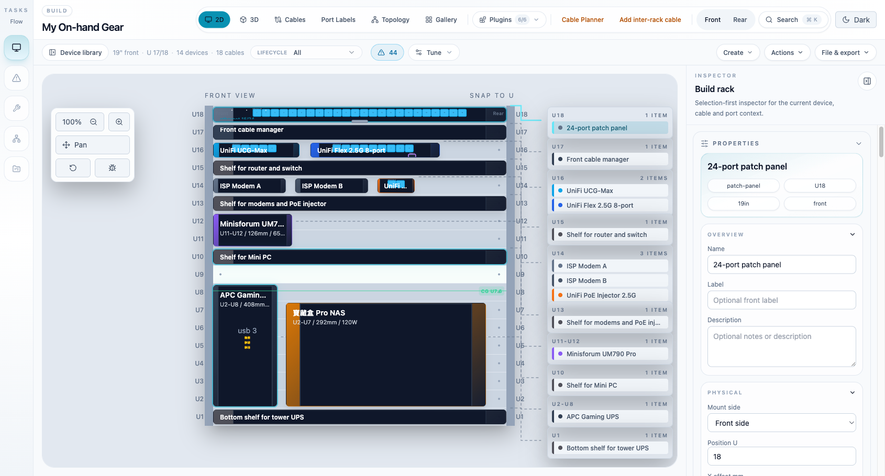
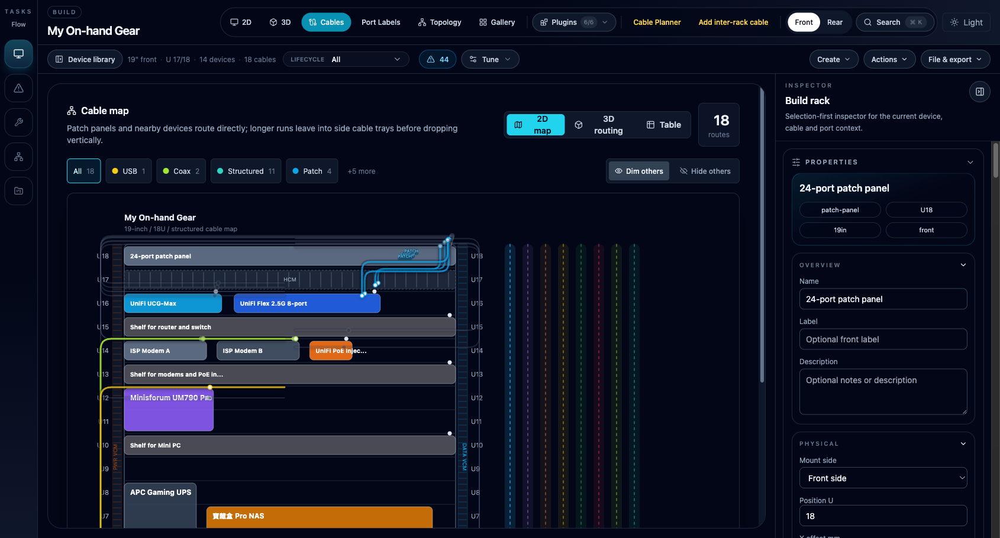
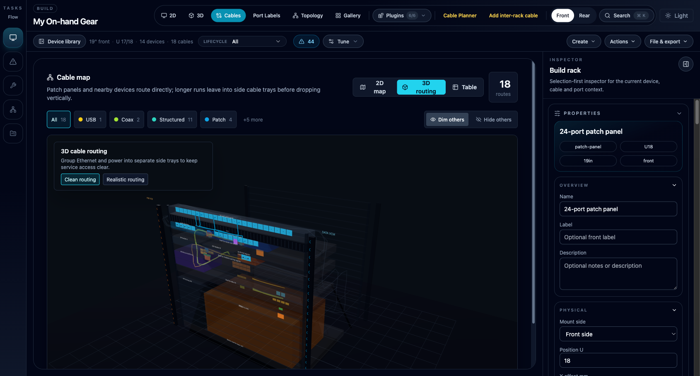
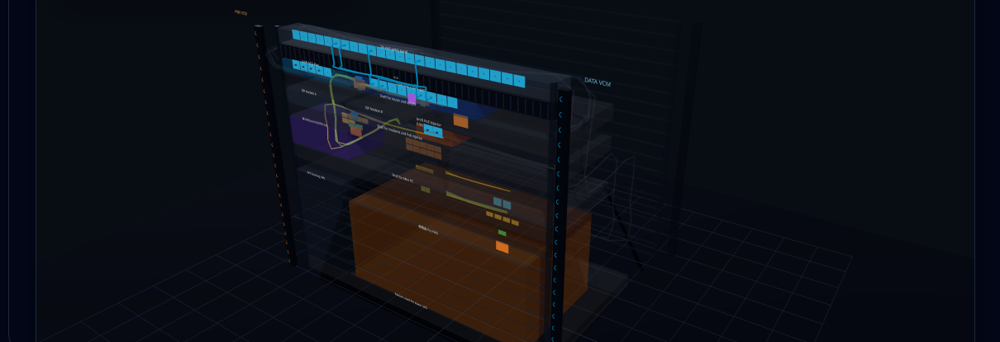
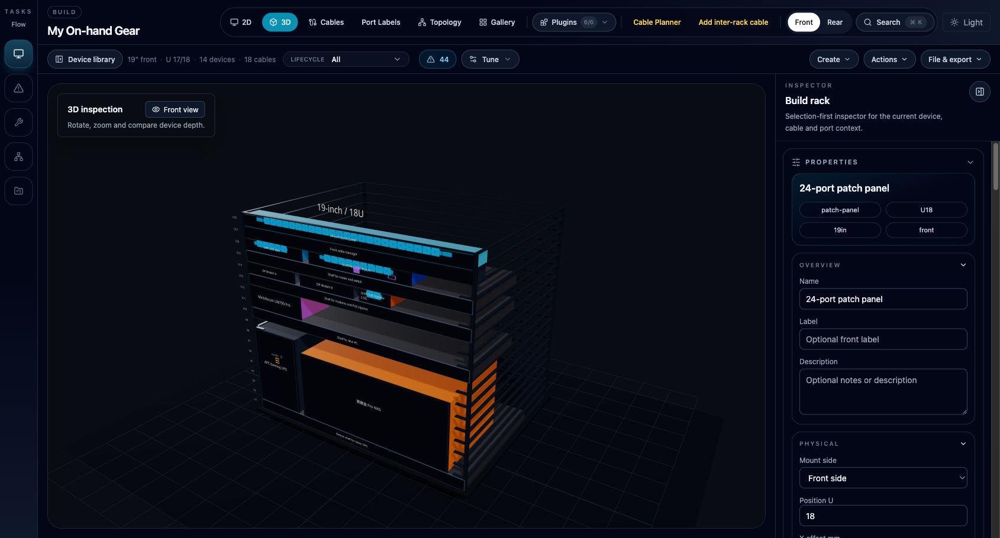
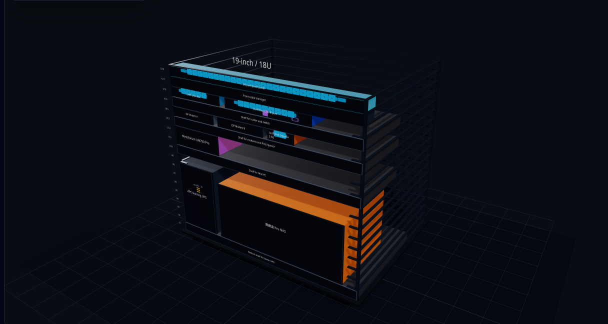

这是一份关于重构主工作区框架的视觉提案。目标是：把屏幕空间还给机架画布，终结工作区与视图模式之间的导航混乱，并让机架健康状况一目了然。不涉及任何数据模型或功能变更——这只是对现有内容的重新组织。
截取自正在运行的应用（18U 机架、14 台设备、18 条线缆、浅色主题）。单个屏幕中就能看到五个结构性问题。

同一个应用、同样的数据、同样的功能——只是重新组织。带编号的徽标在下方图例说明中有详细解释。
每一项改动都把一个已观察到的问题映射到具体的重组方案及其背后的 UX 原则。
| 改前（现状） | 改后（提案） | 原则 |
|---|---|---|
| 看到任何机架像素之前，先叠三行界面框架（约 150px）。 | 单条 52px 顶栏；画布头部承载布局名称 + 健康状况 + 视图模式。 | 内容优先于框架——把像素最大化地留给核心对象。 |
| 工作区（侧栏）与视图模式（工具栏）作为同级入口互相竞争；“构建”与“2D”的区别靠试错习得。 | 两个维度，两个归属：工作区在顶栏，视图模式在画布上。 | 每个概念维度对应一个控件；模式错误（Norman）被消除。 |
| 12+ 个工具栏控件权重相同：视图、透镜、工具、操作、设置。 | 顶栏只放 3 个全局项（工作区、搜索、设置）；所有画布局部的内容移到画布上。 | 席克定律——更少且分组的选项决策更快；邻近性把控件与效果关联起来。 |
| 统计信息是一串标点分隔的调试字符串，没有阈值。 | 四个健康芯片，带进度条 + 状态圆点，数据来自现有的校验汇总。 | 可瞥读性——状态通过前注意加工（颜色/形状）被感知，而不是被阅读。 |
| 机架内容渲染两次：可视化机架 + 旁边逐 U 的列表。 | 机架是唯一的表现形式；U 列表降级为可选的大纲标签页（保留无障碍支持）。 | 每屏一个信息源；冗余会分散注意力。 |
| 检查器面板 = 属性 + 18 条路由 + 预留 + 速率 + 插件管理器的无限堆叠。 | 标签页式检查器面板（属性 / 线缆 / 端口）带计数徽标；管理功能移到设置。 | 渐进式披露——一次一个上下文，徽标保留环境感知。 |
| 缩放分散在三处：浮动面板、平移开关、工具栏徽标。 | 一个右下角控件组 + 滚轮/拖拽手势。 | 遵循惯例（所有地图/画布工具皆如此）+ 一个操作一个控件。 |
| 设备与托板外观毫无区分；选中态是一根发丝级细线。 | 类别色条、斜纹托板样式、发光环选中态。 | 前注意属性承载类别信息；选中态必须 unmistakable（绝不会认错）。 |
实现说明：本提案只重新排布现有组件。健康状态条消费 src/utils/validation.ts 的机架汇总；标签页式检查器面板是对 PropertyPanel.tsx 和线缆面板的重新切片；滑出式组件库复用 ComponentLibrary.tsx；分段工作区控件是对 App.tsx 中现有工作区切换器的重新包装。无需改动 store、路由或数据模型。预估范围：应用外壳 + 3 个组件包装层，置于一个布局特性开关之后。
外壳与第 2 节相同——只有画布列和检查器面板发生变化。当前的布线图本身视觉上很强，但它周围的一切都在与它作对。

同样的截取手法：取自当前应用的真实场景，叠加拟议的界面元素。如果说设备 3D 是搭建参照，那么 3D 路由就是它的走线对照——每根线走哪个线槽、在哪里下垂、留多少余量。如今它是一个又暗又无法操控的角落；重新设计让它拥有与其他视图相同的筛选栏、相同的检查器面板和相同的相机语言。


上图场景取自应用真实的 3D 线缆路由渲染（实时截取），拟议的界面元素叠加其上。
3D 视图是机架的空间真相：组装完成后实际的样子、设备按深度如何排布、什么和什么会碰撞——这些都是 2D 视图在结构上无法呈现的。它是一份供你搭建并对照比对的参照，而不是演示品。当前的外壳把它当作只能看的“检视”；重新设计让它成为一等的工作视图——有真实的控件、真实的数据，以及一条对所看见的内容采取行动的路径。


上图场景取自当前应用真实的 3D 渲染（实时截取），拟议的界面元素叠加其上——你看到的是设计方案落在真实机架上的样子，而不是重新绘制的近似图。